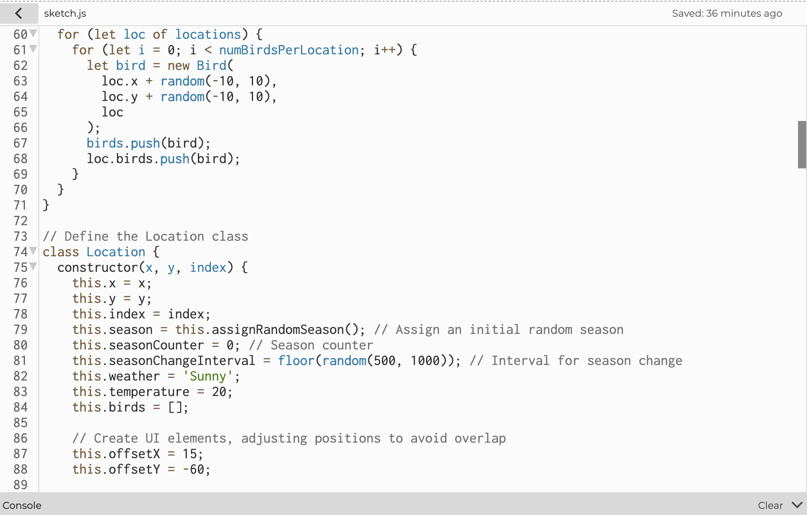

This project is a dynamic simulation of bird migration patterns implemented using the p5.js library. It models how birds migrate between different locations on a map in response to seasonal changes and temperature fluctuations. The simulation mimics real-world bird behaviors by incorporating independent seasonal cycles for each location, temperature variations, and migration triggers based on environmental conditions.
Key Features
Multiple Locations: Each location has its own season, temperature, and weather, changing independently to reflect real-world diversity. Seasons cycle through Spring, Summer, Autumn, and Winter at different intervals per location.
Bird Population: Birds are initialized at each location with individual movement behaviors. They wander locally but monitor environmental conditions to decide when to migrate.
Migration Behavior: Birds migrate when the temperature drops below 0°C and the season is Winter. They disperse to various suitable locations (temperature above 0°C and season not Winter) rather than all moving to a single spot. Migration destinations are randomly assigned among the suitable locations.
Visual Representation: A map serves as the background to provide geographical context. Birds are depicted using images that rotate to indicate movement direction. UI elements are positioned to avoid overlap, enhancing readability.
First Draft
In my first draft, I created a bird migration simulation on a map where birds move between different locations based on weather and temperature. Several locations are initialized on the map, each with adjustable weather and temperature controls. Birds are randomly placed at these locations and will migrate to a new, warmer, and sunnier location if their current environment becomes too cold or snowy. The simulation updates in real-time, showing bird movement and environmental changes.
Script and Documentation
Second Draft
The updated simulation now runs autonomously, with birds migrating based on real-time environmental factors like temperature and season. Each location experiences dynamic seasons and temperature fluctuations, triggering migration when necessary. Birds are visually represented using images, and they automatically migrate to warmer locations when conditions worsen.
Script and Documentation

Final Draft
The final version of the simulation adds updates like a custom font for the UI, making the text more polished. UI elements are now positioned to avoid overlap, and seasons change more smoothly, with birds now facing the direction they’re moving. Overall, the final version tightens everything up and makes the simulation visually refined.